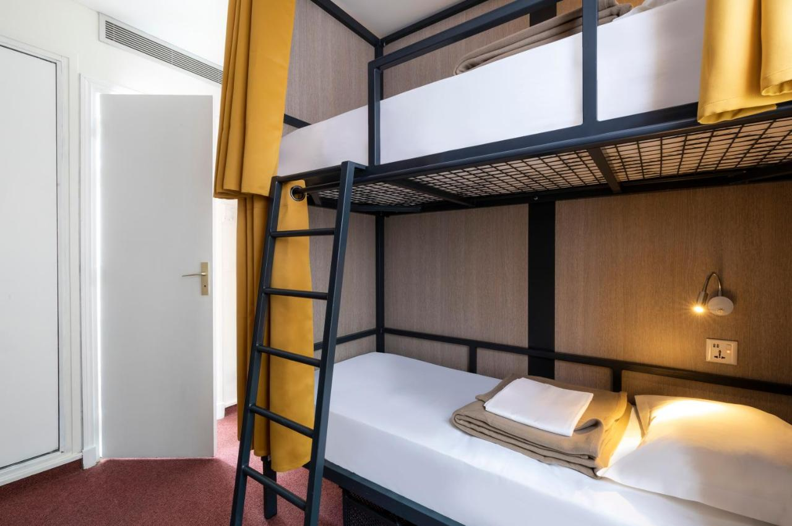

Pariz
- Hoteli
- Apartmani
- Hosteli
Hoteli
Hotel Elysees Opera
Udaljenost od centra: 3.4 km
Udaljenost od postaje metroa/podzemne: 250 m
Obližnje atrakcije/znamenitosti: Kazalište Casino de Paris, Bazilika Sacré-Coeur de Paris, Slavoluk pobjede, Louvre
Hotel Lutetia
Udaljenost od centra: 1.9 km
Udaljenost od postaje metroa/podzemne: 50 m
Obližnje atrakcije/znamenitosti: Robna kuća Le Bon Marche, Grande Epicerie de Paris, Louvre, Katedrala Notre Dame de Paris
Hotel Minerve
Udaljenost od centra: 1.0 km
Udaljenost od postaje metroa/podzemne: 150 m
Obližnje atrakcije/znamenitosti: Paradis Latin Cabaret, Arènes de Lutèce, Opera Bastille, Louvre, Katedrala Notre Dame de Paris
Apartmani
Apartman Bastille Gare de Lyon Paris
Udaljenost od centra: 2.6 km
Udaljenost od postaje metroa/podzemne: 300 m
Obližnje atrakcije/znamenitosti: Viaduc des Arts, Opera Bastille, Katedrala Notre Dame de Paris
Apartman Montmartre Paris
Udaljenost od centra: 3.5 km
Udaljenost od postaje metroa/podzemne: 250 m
Obližnje atrakcije/znamenitosti: Kabaret Moulin Rouge, Carrousel de Paris, Nouvelle Eve, Bazilika Sacré-Coeur de Paris
Apartman Bastille Marais Paris
Udaljenost od centra: 1.4 km
Udaljenost od postaje metroa/podzemne: 200 m
Obližnje atrakcije/znamenitosti: Opera Bastille, Louvre, Katedrala Notre Dame de Paris
Hosteli
Enjoy Hostel
Udaljenost od centra: 3.4 km
Udaljenost od postaje metroa/podzemne: 400 m
Obližnje atrakcije/znamenitosti: Trg Place Denfert-Rochereau, Katedrala Notre Dame de Paris
City Inn Paris

Udaljenost od centra: 4.2 km
Udaljenost od postaje metroa/podzemne: 100 m
Obližnje atrakcije/znamenitosti: Cent Quatre Cultural Centre, Bazilika Sacré-Coeur de Paris
Plug inn Montmartre
Udaljenost od centra: 3.4 km
Udaljenost od postaje metroa/podzemne: 250 m
Obližnje atrakcije/znamenitosti: Kabaret Moulin Rouge, Carrousel de Paris, Bazilika Sacré-Coeur de Paris